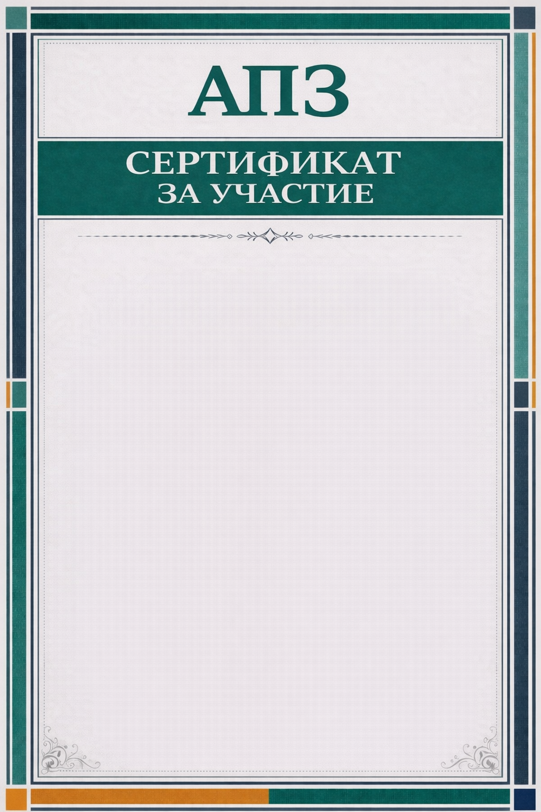
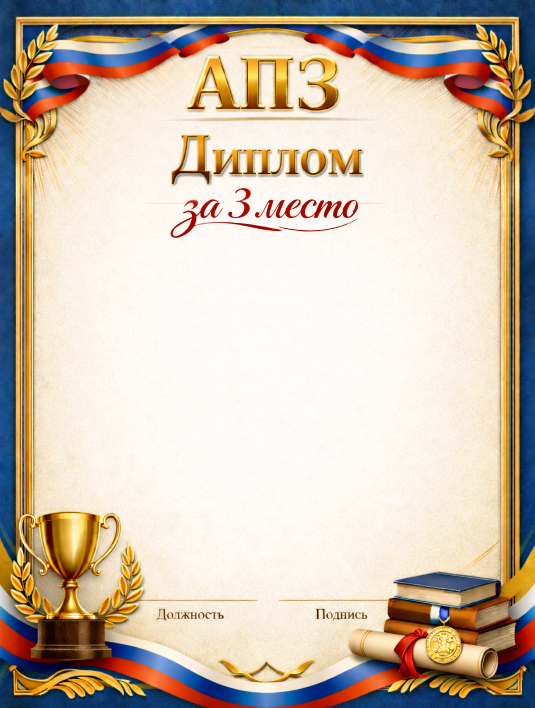
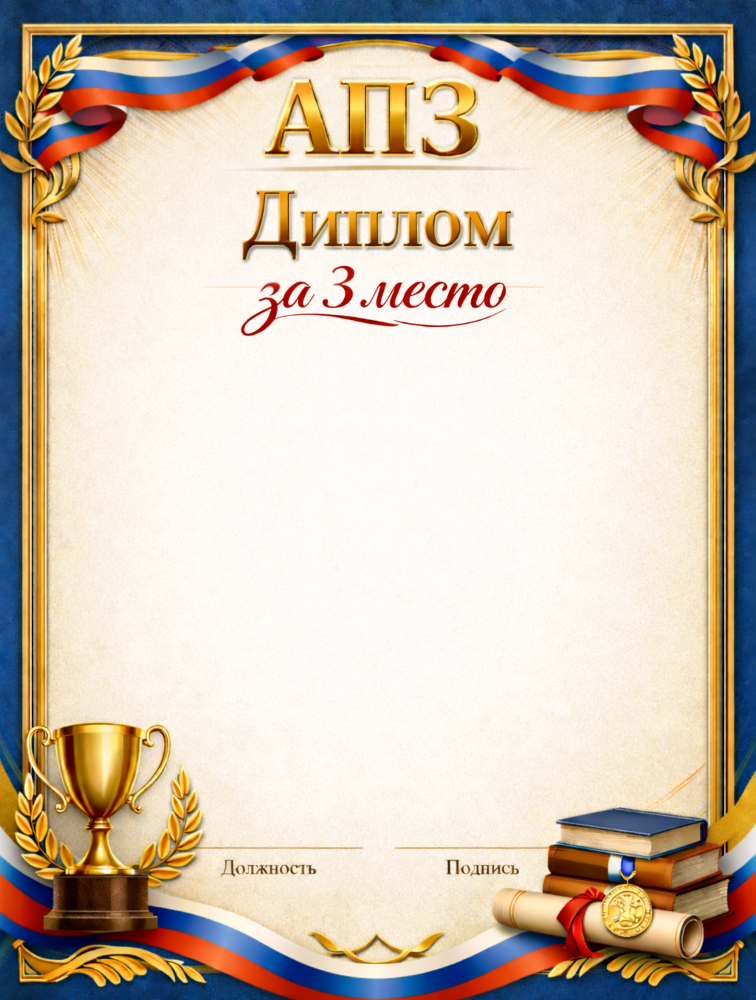
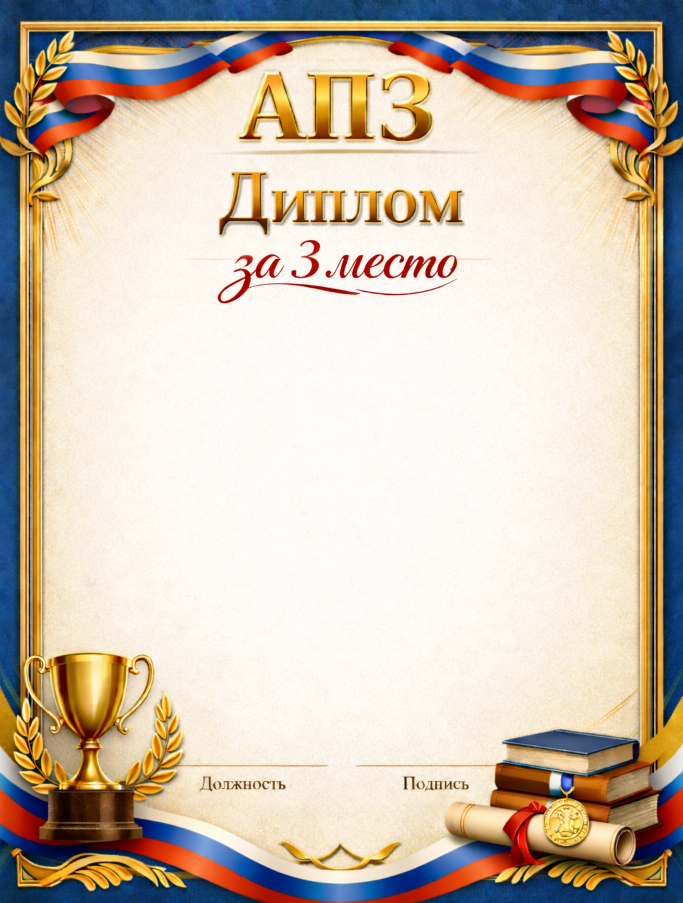

🏅 Грамоты и дипломы
Сформировать и отправить
Выбери пользователя из списка ниже (поиск по имени/фамилии). Имя и фамилия подставляются из статистики по Telegram ID.
Выбор пользователя (первые 200, есть поиск):
Не выбран
Превью шаблонов:

 

